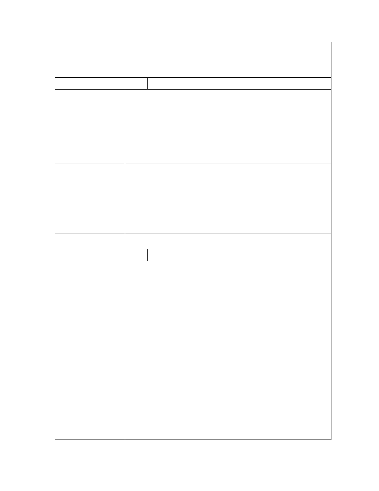

「變更臺北市文山區老泉段三小段358地號等5筆土地保護區為文化
案 名 景觀保存區主要計畫案」暨「擬定臺北市文山區『優人神鼓山上劇
場』文化景觀保存區細部計畫案」
編 號 3 陳情人 台灣蠻野心足生態協會
「變更臺北市文山區老泉段三小段 358 地號等 5 筆土地保護區為文
化景觀保存區主要計畫案」及「擬定臺北市文山區『優人神鼓山上
陳 情 理 由 劇場』文化景觀保存區細部計畫案」因涉及城市保護區變更，有嚴
重破壞都市計畫保護區體制以及製造城市災難之虞，請 貴會通知
本會參與該案所有都市計畫審議程序為荷。
建 議 辦 法 同陳情理由。
1. 臺 北 市 都 市 計 畫 委 員 會 101.07.24 北 市 畫 會 一 字 第
市 府 回 覆 10130037800 號函及 101.07.24 北市畫會一字第 10130038300
意 見 號函分別函覆陳情人，屆時將通知到場旁聽在案。
2. 有關保護區變更部分，併陳情案編號 2 之市府回覆意見。
專 案 小 組 審 查 1.悉。
意 見 2.有關保護區變更部分，併陳情案編號 2 之審查意見。
委 員 會 決 議 同編號 1 決議。
編 號 4 陳情人 台北大學不動產與城鄉環境系副教授廖本全
主旨：優人神鼓使用之保護區，不應變更為文化景觀保存區。
說明：
1. 該基地土地 73.88%位於三級坡以上（平均坡度大於 30%），
雖計畫內容限制坡度大於 30%以上之土地，不可開發建築，
但基於基地之完整性，此一基地顯然不應變更使用。
2. 優人神鼓雖僅使用坡度低於 30%之土地（佔基地 26.12%），
但使用之土地不僅緊鄰陡坡，且為陡坡所圍繞，基於土地
使用之安全性，不應變更使用。
陳情理由
3. 保護區之變更實為城市發展之重大事務，因保護區變更不
僅具不可逆性（除非重大災害發生），且一旦變更為非保護
區後，其土地使用形態與強度，即無法以保護區之功能予
以規範，甚至未來可以透過細部計畫或再度申請變更（相
對容易），進一步強化其土地使用規模，故不可貿然變更。
4. 本案之計畫目標三有「提供展演藝文與自然生態環境保育
共榮共存」，既然是為了「生態環境保育」之目標，則該基
地之土地使用分區自當以「保護區」為宜。
5. 基於上述，懇請台北市都市計畫委員會，不應同意變更該
第 - 20 - 頁，共 31 頁